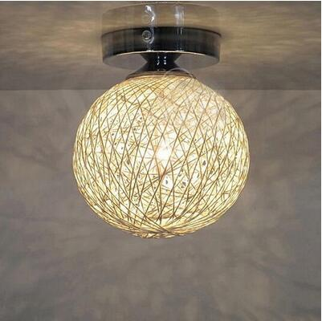

25 PUOŠNŪS „PASIDARYK PATS“ NAKTINIAI ŽIBINTAI, KAD ATITIKTŲ BET KOKĮ NAMŲ DEKORAVIMĄ - DEKORAVIMAS - 2020
- Mieli LED „Flamingo“ vienaragio naktiniai žibintai ...
Gintaro baldai naktiniai staliukai Jūsų miegamajam – vienas geriausių pasirinkimų, norintiems organizuoti patogią, jaukią, tvarkingą ir skoningą erdvę apie savo lovą, tačiau nenorintiems mokėti krūvos pinigų už naktinį staliuką.Gintarobaldai.lt svetainėje rasite modernaus ir klasikinio dizaino naktinių staliukų itin žema kaina. - Naktiniai staliukai | Gintaro baldai
Naktiniai žibintai. Naujos prekės Naujas geležies virtuvės ritininis popierinis rankšluosčių laikiklis tualetinio popieriaus laikiklis Audinių laikymo stovas Kabineto kabyklos lentynų virtuvės organizatorius EUR € 11.10 Išparduota. 2018 virtuvė Nešiojama pakabinamoji drenažo dėžė Nuleidimo lentynos krepšelis Vonios laikymo ... - Naktiniai žibintai ant akumuliatorių (29 nuotraukos ...
Ultravioletiniai prožektoriai ir žibintuvėliai. Ultravioletinis žibintuvėlis su savo UV šviesa padės jums atpažinti netikras kupiūras, padės gintaro paieškoje, žvejyboje flourescenciniais masalais, rasti skysčių nutekėjimą automobilyje ir kitose situacijose. - LED naktiniai žibintai (40 nuotraukų): vaikų medienos ...
LED naktiniai žibintai - tai ateities žibintai, kurių išskirtiniai bruožai yra išskirtinai ilgas tarnavimo laikas ir didelis funkcionalumas. Produktai plačiai naudojami miesto apartamentuose ir kaimo namuose, jie lengvai integruojami į šiuolaikinį interjerą. - Naktiniai žibintai - Internetinė Parduotuvė
Naktiniai žibintai - Geriausios kainos, greitas pristatymas, kokybės užtikrinimas! Ateikite ir pasirinkti. Mūsų parduotuvė laukia tavęs. - Naktiniai žibintai žmonių partijos Įvykiai tapetai ...
Prekės tipas: „Night LightsIs“ baterijos: Nenaudojama: „HolidayModel“ numeris: L3D478Sertifikacija: RoHS, ce, FCC, EMCPower Šaltinis: Sausi akumuliatoriai ... - Naktiniai naktiniai žibintai nuo drugelio prie lovos ...
Naktiniai žibintai ant baterijų - puikus pasirinkimas kūdikio kambariui. Stiprybės ir trūkumai. Vaikų naktiniai žibintai ant baterijų turi neabejotinų pranašumų, todėl jie yra paklausūs. Pagrindinis šio priedo privalumas yra jo saugumas. Jis gali dirbti visą naktį, o tėvai bus ramūs, kad jų kūdikis būtų visiškai apsaugotas. - Šviestuvai, Žibintai | Gintaro baldai internetu
Naktiniai staliukai, veidrodžiai (8) Lovos (27) Vaikų ir jaunuolių kambario baldai (46) Lentynos (8) Kabyklos (2) Komodos (8) Vaikiškos kėdės (55) Lovos (9) Komplektai (6) ... Žibintai, žvakidės, žvakės Puslapyje rodyti: Filtruoti: Grįžti atgal. Kaina. Filtruoti ... - Naktiniai žibintai (84 nuotraukos): naktinis lemputė ...
Kokie įdomūs naktinio apšvietimo modeliai šiandien? Pavyzdžiui, naktinis lemputė miegamajame su mėnulio forma su judesio jutikliu bus įdomus visiems ir taps namo akcentu. Suaugusiųjų lempos gali būti aprūpintos žadintuvu, o vaikams - vaiko verkimo funkcija. - 11 naktinių žibintų, kurie jūsų vaiko kambaryje atrodys ...
Naktiniai žibintai gali atrodyti kaip šiek tiek smulkūs, palyginti su visa kita, kas jums reikia, kad užbaigtumėte savo vaiko erdvę, bet jie taip pat yra labai svarbūs - jie daro vaikus jaustis patogiai tamsoje, o tai reiškia, kad jie gauna daug naudos. Taigi, jūs žinote, kad jūs taip pat galite padaryti kuo mielesnius.
Pagrindinis
Pagrindinis
Amatai Dekoravimas Mada Maistas Sodininkystė SveikataPagrindinis
Amatai Dekoravimas Mada Maistas Sodininkystė Sveikata Dekoravimas Pagrindinis › Dekoravimas › 25 puošnūs „pasidaryk pats“ naktiniai žibintai, kad atitiktų bet kokį namų dekoravimą25 puošnūs „pasidaryk pats“ naktiniai žibintai, kad atitiktų bet kokį namų dekoravimą
Ar jūsų vaikai turi naktį įjungti naktinį apšvietimą, kol jie miega? Kasykla darydavo, kai jie buvo jaunesni, ir net dabar aš vonioje nešioju naktinę lemputę, kad mano šeimai būtų lengviau, kai ji prabunda naktį, o ne paliktų visą naktį degančią šviesą. Neseniai galvojau apie tą nakties šviesą ir galvojau, kaip lengva pasidaryti „pasidaryk pats“, kad geriau atitiktų mano vonios kambario dekorą. Ar patikėtumėte, kad radau 25 paprastus „pasidaryk pats“ naktinius žibintus, kurie atitiks bet kokį dekorą?
Aš padariau ir negalėjau daugiau jaudintis. Jie ne tik yra puikūs namams, bet ir daro nuostabias dovanas. Radau gražų darželio naktinį apšvietimą, kurį galite pagaminti per kelias minutes. Jei šį sezoną pasirinksite kūdikio dušą, tai yra nuostabi dovana. Tai visi yra labai lengva pasidaryk pats ir daugelis iš jų yra puikūs vaikų miegamiesiems. Kai kurie iš jų netgi puikiai tinka suaugusiųjų miegamiesiems! Kad ir koks būtų jūsų dabartinis namų dekoras, čia tikrai rasite „pasidaryk pats“ naktinį apšvietimą. Be to, būtinai patikrinkite šias 15 žvakių ir balionėlių, kuriuos taip pat galite pasigaminti.
Aš myliu „pasidaryk pats“ apšvietimą. Nesvarbu, ar tai lauke, ar lauke, ir šie „pasidaryk pats“ naktiniai žibintai yra tokie nuostabūs. Nuo pigių ir lengvų penkių minučių naktinių žibintų iki tokių, kurie užtruks šiek tiek ilgiau, bet neabejotinai atrodys daug profesionaliau, rasite „pasidaryk pats“ naktinį apšvietimą, kuris atitiktų kiekvieną jūsų namų stilių, dekorą ir kiekvieną asmenį. Pramogos vaikams skirtos versijos yra puikios, kad padėtų jūsų mažyliams jaustis saugesniais lovose naktį, ir jiems yra labai smagu. Be to, jei jums patinka „pasidaryk pats“ apšvietimas, norėsite peržvelgti šiuos 20 „pasidaryk pats“ sodo apšvietimo projektų, kurie gražiai apšvies jūsų lauką.
1. „Pasidaryk pats“ trijų minučių darželio naktinis apšvietimas
Šie paprasti „pasidaryk pats“ vaikų darželio naktiniai žibintai gali būti pagaminti vos per tris minutes ir jie yra nuostabūs. Galite pasigaminti juos savo darželiui arba pasidaryti porą dovanų artėjančiame kūdikio duše. Naktiniai žibintai darželyje yra nuostabi idėja - jie neišskiria per daug šviesos, kad neišlaikytų kūdikio, bet skleidžia pakankamai šviesos, kad galėtumėte pamatyti, kada turite eiti vėlai vakare.
Vadovėlis: themaven
2. Mieli „pasidaryk pats“ naktiniai žibintai
Jei turite vaikų arba patys mėgstate parašytą žodį, šie „pasidaryk pats“ naktiniai žibintai yra puikus projektas tau. Jums reikia šios knygos kieto viršelio ir, jei neturite rankos, kurią norite naudoti, patikrinkite vietines taupumo parduotuves. Paprastai jie juos turi už dolerį ar mažiau už knygą. Juos labai lengva surinkti ir atrodyti taip gražiai, tiesiog sėdint ant spintelės, sklindant mažai šviesos.
Vadovėlis: grathio.com
3. Pint dydžio „Mason Jar“ skaidrus naktinis apšvietimas
Aš myliu šį mažą mason stiklainį. Jūs tiesiog pridedate LED žvakę ar keletą styginių lempučių ir pakabinkite ją ant kaimiško medžio. Jūs netgi galite tai padaryti su įprasta naktine lempute, kad galėtumėte lengvai pasiekti įjungimo ir išjungimo jungiklį. Tai būtų toks lengvas pasidaryk pats projektas, arba galite tiesiog patikrinti tą, kurį radau Etsy. Jis kainuoja mažiau nei 20 USD, yra įvairių spalvų ir yra tiesiog įjungiamas į įprastą lizdą. Tikrai pridėkite tai prie savo „DIY“ mūrinių indelių namų dekoro projektų sąrašo.
Šaltinis: etsy.com
4. Linksmas „pasidaryk pats“ žvaigždyno naktinis apšvietimas
Vaikams šis „pasidaryk pats“ žvaigždyno stiklainis naktinis apšvietimas yra tobulas. Jūs galite tai padaryti su mažu mūriniu ar želė indeliu ir tai yra labai lengvas pasidaryk pats projektas. Jums tereikia stiklainio, vienkartinės pyrago keptuvės ir keleto žiburių, taip pat kelių amatų atsargų. Sukurkite bet kurį žvaigždyną, kurį norite, arba sugalvokite savo. Vaikams patiks švelni šviesa, kurią tai skleidžia, ir jie žavėsis stebėdami, kaip žvaigždės naktį šoka ant sienų ir lubų.
Mokomoji knyga: mama
5. Įnoringas „pasidaryk pats“ Motelio naktinis apšvietimas
Aš dievinu šią mažą naktinę lemputę, kuri atrodo lyg senas motelio ženklas. Tai yra labai lengva pasidaryti „pasidaryk pats“ naktinė lemputė, kuri tinka daugiau nei standartinė naktinė lemputė, kurią galite pasiimti dolerių parduotuvėje už maždaug dolerį. Galite atspausdinti savo kompiuterio dizainą ant storo amatų tipo popieriaus arba naudoti seną atviruką, jei tokį turite.
Vadovėlis: dizaino kempinė
6. „pasidaryk pats“ debesų naktiniai žibintai
Vaikams patiks šie „pasidaryk pats“ debesų naktiniai žibintai. Juos labai lengva pasigaminti, o kai viskas pasibaigia, nakties šviesa atrodo kaip tikras audros debesis, bauginantis perkūnas. Norėdami tai padaryti, jums reikia tik kelių dalykų, ir tai yra tikrai pigi medžiaga. Turėdami šiek tiek vatų, lemputę ir keletą popierinių žibintų, jūs puikiai eisite kurdami aukščiausią „pasidaryk pats“ debesies naktinį apšvietimą.
Vadovėlis:
7. Apyvartinta plastikinių butelių fėjos naktinė lemputė
Jei jūsų vaikai mėgsta laumės, o dauguma jų daro, šie mažieji „pasidaryk pats“ pasakų naktiniai žibintai, kuriuos pasigaminate iš perdirbtų plastikinių butelių, puikiai tinka jų miegamiesiems. Arba vieną iš jų galite palikti vonios kambaryje, kad parodytų kelią, kai jie atsikelia naktį. Juos taip lengva pasidaryti ir žavius, kai jie bus baigti. Norint juos pagaminti, jums tereikia plastikinių butelių, LED lempučių, šilko gėlių ir šiek tiek vaizduotės, taip pat kelių pagrindinių amatų reikmenų.
Vadovėlis: craftsbyamanda
8. Žavingasis „pasidaryk pats“ „Olaf Nightlight“
Jei jūsų mažieji dievina „Frozen“, jie tikrai mylės šią mažą „pasidaryk pats“ „Olaf“ naktinę šviesą. Tai atrodo lygiai taip pat, kaip mylimą sniego senį iš „Frozen“, ir jį pasidaryti tikrai lengva. Tam jums tereikia poros polistirolo puodelių, šiek tiek juostos, vamzdžių valiklių, „Google“ akių ir kelių pagrindinių amatų reikmenų. Bet kuris „Frozen“ meilužis pamėgs savo miegamajame turėti šią mažą „Olaf“ naktinę lemputę.
Vadovėlis: saulės aulinukai ir gerai nusiauti batai
9. Matinio paplūdimio tema „Mason Jar Nightlight“
Aš myliu gerą mūrinio indelio „pasidaryk pats“ projektą ir šis mažas matinis indas su paplūdimio tema yra viena mano mėgstamiausių naktinių idėjų. Tai labai paprastas projektas, jei norite jį įgyvendinti. Jūs tiesiog surinksite keletą tuščių mūrinių indelių, užšaldysite juos tinkamais dažais ir tada pridėsite savo paplūdimio tematikos dekoravimą. Taip pat galite patikrinti šį gražų su flamingo, kurį radau „Etsy“ tik už 14 USD.
Vadovėlis: etsy.com
10. „Pasidaryk pats“ židiniai
Jūsų vaikai tikrai dievins šiuos mažus židinius, kurie tarnauja kaip naktiniai žibintai. Jūs gaminate juos su plastikiniais velykiniais kiaušiniais ir jie negalėjo būti žavingesni. Jums net nereikia daug medžiagų ar medžiagų, kad jas pagamintumėte, ir nereikia jokių klijų. Jums tereikia baterijos maitinamos lemputės, plastikinio kiaušinio kiekvienam, kurį norite pagaminti, ir tada keleto amatų reikmenų, kad juos papuoštumėte ir paverttumėte žavingais mažaisiais žvakes.
Vadovėlis: dviračiai
11. Mielas „pasidaryk pats“ karšto oro balionų naktinis apšvietimas
Vaikams šis „pasidaryk pats“ karšto oro balionų naktinis apšvietimas yra tobulas. Tai tikrai spalvinga, todėl puikiai tinka dekoruoti dienos metu, o balionas užsidega naktį, kad suteiktų švelnų švytėjimą jų miegamajame. Tai galite padaryti iš perdirbtų alavo skardinių, o tai mano knygoje dar geriau, nes šiukšles paverčia lobiu. Tai puikiai tinka vaikų darželiams ar mažiems vaikams.
Vadovėlis: alinakelo
12. Matiniai „pasidaryk pats“ pasakų žibintai
Čia yra dar vienas puikus būdas įtraukti laumės į savo pasidaryk pats naktinę šviesą. Šiuose mažuose matiniuose indeliuose gyvena realios laumės ... na, tikrai ne, bet jie atrodo kaip jie. Tai darote su pasakų išpjovomis ir LED lemputėmis, taip pat su tuščiais stikliniais indais ir, kai jie bus baigti, jie bus puošnūs. Tai yra toks paprastas projektas ir puikiai tinka vaikų kambariams ar vonios kambariams.
Vadovėlis: pixiehill
13. „DIY Gem Nightlight“
Šis „pasidaryk pats“ brangakmenio naktinis apšvietimas puikiai tinka vonios kambariams ar prieškambariams ir yra labai lengvai pagaminamas. Tai padarote naudodami kartoną ir vellum, kartu su įprastu naktinio apšvietimo kištuku. Jūs galite padaryti bet kokį perlą, kurį norėjote, ir bet kokia forma, jei tik turite šabloną, kad gautumėte reikiamą dydį. Jie užima labai mažai laiko ir yra tokie žavūs, kai jie yra baigti.
Vadovėlis: beveik netobulas
14. Puošnus stiklo bloko naktinis apšvietimas
Kas žinojo, kad paprastas stiklo blokas gali skleisti tokį gražų naktinį apšvietimą? Tai yra taip paprasta. Jūs tiesiog pridedate stiklų lemputes prie stiklo bloko, kurį galite įsigyti bet kurioje namų tobulinimo parduotuvėje, ir tada pridėkite bet kokių dekoracijų, kurių norite. Man patinka ši „namų“ naktinė lemputė, kurią radau „Etsy“. Galite įsigyti šį, jei nenorite to daryti savarankiškai, už maždaug 20 USD, jis pateikiamas kartu su žibintais ir dekoracijomis.
Vadovėlis: etsy.com
15. „pasidaryk pats“ blizganti naktinė drobė
Man patinka idėja paversti jūsų „pasidaryk pats“ naktinį apšvietimą meno kūriniu, būtent tai ir daro ši žvilganti drobės šviesa. Jūs tiesiog pasirenkate dizainą, kurį norite, kad jūsų žibintai įgautų, ir tada sukurkite jį, įkišdami skylutes drobėje ir pridėdami stygų lemputes. Kaip lengva tai padaryti? Priklausomai nuo to, kiek jums reikia nakties lemputės, galite pridėti tiek mažai ar tiek šviesų, kiek norite.
Vadovėlis: apartamentų terapija
16. Lengvas pasidaryk pats „žėrintis“ virvės kilimėlis
Nėra jokios taisyklės, kuri pasakytų, kad jūsų „pasidaryk pats“ naktinė šviesa turi sėdėti ant spintelės arba būti įjungta į sieninį lizdą. Tiesiog pažvelkite į šį gražų žėrinčią virvės kilimėlį. Tai padaryti yra labai lengva ir pati unikaliausia naktinė lemputė, kokią aš kada nors mačiau. Norėdami tai padaryti, jūs tiesiog nėrkite aplink virvę. Tai gana lengva, net jei nėriate daug nėrimų, ir tai puikiai tinka treniruotėms. Tai taip pat padarytų nuostabias „pasidaryk pats“ nėrimo dovanas.
Vadovėlis: grosgrainfabulous
17. „DIY“ apšviestas drobės naktinis apšvietimas
Paprasta drobė ir lemputė suteikia jums beveik viską, ko jums reikia, kad ši jauki apšviesta drobė būtų naktinė. Jūs tiesiog sukuriate norimą pranešimą naudodami drobę, tada pridėkite savo apšvietimą. Na, čia yra šiek tiek daugiau, bet jūs gaunate vaizdą. Tai ypač paprastas „pasidaryk pats“ naktinis apšvietimas, kuris puikiai tinka prieškambariuose ar net vonios kambariuose ... kur jums reikia.
Vadovėlis: dizaino kempinė
18. „Pasidaryk pats“ žvaigždinis piramidinis LED naktinis apšvietimas
Ši maža „pasidaryk pats“ piramidės naktinė lemputė yra gražaus žvaigždžių dizaino ir puikiai tinka miegamiesiems, tankiems ar kitiems kambariams, kuriuos jums reikia šiek tiek apšviesti. Tai taip pat labai lengva pagaminti. Tai padarysite atspausdinę žvaigždes ar bet kurį kitą norimą dizainą, tada sulankstydami į piramidės formą. Šviesa gaunama iš akumuliatoriaus maitinamos LED lemputės. Jūs netgi galite suprojektuoti šį, kad pritvirtintumėte prie sienos.
19. Mielas rankomis sulankstytas origami naktinis šviestuvas stiklainyje
Šie maži origami kranai yra patys švelniausi dalykai, kuriuos aš kada nors mačiau, juo labiau, kad jie yra stiklainyje ir apsupti apšvietimo. Jūs taip pat galite lengvai sukurti savo „pasidaryk pats“ origami naktinį apšvietimą. Jei žinote, kaip tai padaryti origami, tiesiog sulankstykite savo dokumentus pagal norimą dizainą ir įpilkite į stiklainį keletą skanių lempučių. Arba patikrinkite tai, kuriame yra origami kranai. Radau jį „Etsy“ tik už 30 USD.
Šaltinis: etsy.com
20. Lengvas „pasidaryk pats“ laidinis naktinis apšvietimas
Ši maža naktinė lemputė yra pagaminta iš standartinio naktinės lemputės kištuko ir tam tikros laido. Galite formuoti laidą į bet kurią norimą formą ir tada pritvirtinti prie naktinio apšvietimo pagrindo, kad jis būtų šiek tiek dekoratyvesnis. Tai labai lengva ir tikrai pigu. Tos nakties šviesos bazės yra maždaug maždaug doleris, o viela yra tikrai nebrangi. Už keletą dolerių galėtumėte pasidaryti „pasidaryk pats“ formos naktinį apšvietimą kiekviename namo kambaryje.
Vadovėlis: amatų nuleidimas
21. Paprasti „pasidaryk pats“ „Glow Jar“ naktiniai žibintai
Šie maži spindesiai tamsiuose indeliuose yra tobuli kaip „pasidaryk pats“ naktiniai žibintai. Tai yra vienas iš paprasčiausių projektų ir jums nereikia jaudintis dėl papildinių ar baterijų. Taip pat galite naudoti perdirbtus stiklinius indelius, kuriuos kitu atveju galite išmesti. Laikykite tuos marinuotų indelių, stiklinius majonezo stiklainius ir kitus nereikalingus stiklainius ir paverskite juos jaukiu žvilgsniu tamsiuose naktiniuose žibintuose!
Vadovėlis: naujausi rankdarbiai
22. Mielas „Vintage Camera“ naktinis apšvietimas
Jei jums patinka fotografuoti, jūs dievinsite šį „pasidaryk pats“ naktinį apšvietimą, kurį padarėte iš seno fotoaparato. Tai yra toks mielas projektas ir labai lengvai įgyvendinamas. Jei neturite senovinio fotoaparato, siūlau pasidomėti vietinėse taupių prekių parduotuvėse. Jie visada turi daug senovinių daiktų, kad būtų tikrai pigūs. Kai turėsite fotoaparatą, galėsite jį paversti puikiu „pasidaryk pats“ naktiniu apšvietimu fotografams.
Vadovėlis: instrukcijos
23. So Easy DIY vyno butelio naktinis apšvietimas
Šis „pasidaryk pats“ vyno butelio naktinis apšvietimas, tiesą sakant, yra lengviausias dalykas pasaulyje, ir jums taip pat nereikia daug atsargų bei medžiagų. Jums tereikia seno vyno butelio ir keleto aiškių lempučių. Tai puikus „pasidaryk pats“ naktinis apšvietimas prieškambario stalui arba vonios kambariams ar miegamiesiems. Jie tiesiog nėra lengvesni už šį, ir aš mėgau apšviesto spalvoto vyno butelio apeliaciją! Aš myliu „pasidaryk pats“ vyno butelių projektus.
Vadovėlis: witandwhistle
24. „Retro VHS Tape Nightlight“
Kuo žavinga ši retro VHS juostos naktinė lemputė? Jei mėgstate senus filmus ar apskritai esate kino mėgėjas, jums patinka šis. Tai galite padaryti kaip dovanas ir išduoti ir filmų mėgėjams. Tiesiog savo spintoje raskite tas senas VHS juostas arba apsilankykite vietinėse taupių prekių parduotuvėse. Mūsų pas juos yra mažiau nei doleris už juostą, todėl jie yra ypač pigūs. Man labai patinka idėja padovanoti vintažinį filmą! Ir jei nenorite tokių pasigaminti patys, patikrinkite tuos, kuriuos radau „Etsy“ už mažiau nei 21 USD.
Vadovėlis: etsy.com
25. Pakartotinai įmontuota vielos krepšio lemputė
Taigi radau šį „pasidaryk pats“ šviesos projektą ir pagalvojau, kad jis taip pat pavers puikų „pasidaryk pats“ naktinį apšvietimą. Jums tiesiog reikia naudoti mažesnį krepšį. „My Dollar Tree“ yra trijų mažų krepšelių rinkinys už tik dolerį, todėl jūs galite lengvai padaryti tris iš jų už mažiau nei 5 USD, net ir nusipirkę žibintus bei kitus reikmenis. Tai yra tikrai mieli ir puikiai tinka jūsų mažiesiems - miegamiesiems ar vonios kambario nakties šviesai.
Vadovėlis: poppytalk
Rekomenduojama
Mada900+ nemokami siuvimo modeliai pradedantiesiems ekspertams
Mezgimas ir nėrimasKaip lengvai sukurti puošnias nertas rožes - vaizdo įrašo vadovėlis + nemokamas raštas
Maistas12 linksmų ir protingų būdų, kaip šią vasarą pjaustyti, patiekti ir mėgautis arbūzu
Gyvenimo būdai7 nepaprastai lengvi „Zip Tie“ gyvenimo būdai, siekiant išspręsti įprastas problemas
Atostogos105 „pasidaryk pats“ Velykų papuošalai, kuriuos galite pasigaminti patys
AtkurkiteKaip lengvai suasmeninti arbatos žvakę
Populiarios Temos 2020
AmataiKaip iš statybinio popieriaus padaryti gražią puansetiją
Atkurkite20 nuostabiai meistriškų „pasidaryk pats“ idėjų perdirbti sugadintus veidrodžius
Gyvenimo būdai10 paprastų gyvenimo spyrių kasdieninėms problemoms išspręsti
60 „pasidaryk pats“ tvarto durų projektų, kad jūsų namams būtų suteikta šiek tiek sodybos nuojauta
October 29,202040 „pasidaryk pats“ grožio hackers, kurie yra ribinis genijus
October 29,202040 gaivių „Popsicle“ receptų, kuriuos tiesiog turite išbandyti šią vasarą
October 29,2020Įdomios Straipsniai 2020
October 29,202020 paprastų uogienių ir želė receptų, kurie suteikia puikių atostogų dovanų
October 29,202020 šventiškai paprastų vyno butelių amatų, skirti papuošti atostogų namus
October 29,202050 „pasidaryk pats“ namų dekoravimo ir baldų projektų, kuriuos galite padaryti iš 2X4
October 29,202020 skanių Detox vandenų, kurie valo jūsų kūną ir degina riebalus
October 29,202015 linksmų ir kūrybingų būdų, kaip papuošti krepšelius šia padėka
Redaktoriaus Pasirinkimas
NaminisTai Wrap! Kaip pasidaryti savo dovanų maišą (taip paprasta!)
Kaip pasidaryti drugelio terariumo stiklainį
October 29,2020Papuošimas raidėmis ir žodžiais: 37 įspūdingi vadovėliai parodo, kaip pasidaryti savo
October 29,202032 puikūs naminio valymo receptai vaisiaus namams
October 29,2020
Kaip iš senos knygos padaryti gražią gėlių dekoraciją
AtkurkiteKaip iškepti šį psichodeliškai spalvingą netikėtumo pyragą
MaistasKaip pasidaryti paprastą popierinį Velykų zuikį
AtostogosKaip persodinti plantatorių į mielą Velykų zuikį
October 29,202021 nuostabi „pasidaryk pats“ stalo organizatoriai, kurie išnaudoja visas jūsų biuro erdves
October 29,202035 skanūs maisto produktai, kurių jūs nežinojote, kad galėtumėte pasigaminti savo vaflinėje
October 29,2020 Dekoravimas: 25 puošnūs „pasidaryk pats“ naktiniai žibintai, kad atitiktų bet kokį namų dekoravimą © Copyright 2020. All rights reserved.